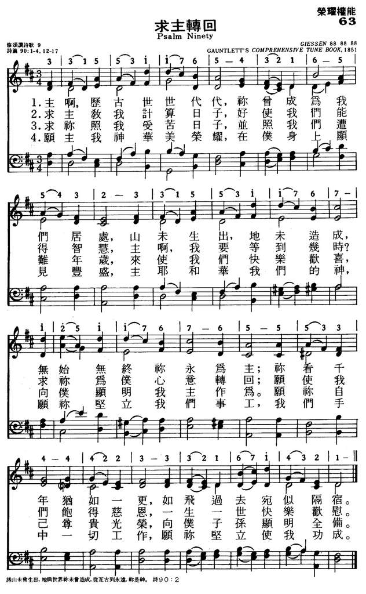

|
|
063求主转回 |
|
|
1.主啊，历古世世代代，你曾成为我们居处，
山未生出，地未造成，无始无终你永为主； 你看千年犹如一更，如飞过去宛似隔宿。 2.求主教我计算日子，好使我们能得智慧， 主啊，我要等到几时？求你为仆人心意转回； 愿使我们饱得慈恩，一生一世快乐欢慰。 3.求你照我受苦日子，并照我们遭难看见， 来使我们快乐欢喜，向仆显明我主作为。 愿你自己尊贵光荣，向仆子孙显明全备。 4.愿主我神华美荣耀，在仆身上显见丰盛， 主耶和华我们的神，愿你竖立我们事工， 我们手中一切工作，愿你坚立使我功成。 |
|
https://www.mred365.cn/szxg/7066.html
 |
|
|
|
|

LX1803
Psalm Ninety
063求主转回
诗篇第90篇逐节注解、祷读
音频播放器 00:00 00:00 使用上/下箭头键来增高或降低音量。
【诗九十1】「（神人摩西的祈祷。）主啊，祢世世代代作我们的居所。」
【诗九十2】「诸山未曾生出，地与世界祢未曾造成，从亘古到永远，祢是神。」
本篇可能是年老的摩西在快要行完旷野的路程时写的，可能是诗篇里最古老的诗歌。摩西在诗中颂赞神的永�琚]1-2节），承认人的脆弱（3-6节）、罪性（7-8节）和短暂（9-12节），仰望圣约的恩典（13-17节）。
以色列人在旷野飘流四十年，居无定所。但即便在神震怒的三十八年里，祂还是作自己百姓安息的「居所」（1节），从来没有停止吗哪的供应和云柱火柱的带领。今天，信徒也像以色列人被分散在世界、在地上寄居，但也正像神向以色列人所应许的：「我还要在他们所到的列邦，暂作他们的圣所」（结十一16）。只要神与我们同在，无论什么地方都是我们可以安息的「居所」。
在旷野飘流的四十年里，摩西眼看着与他同出埃及的那代人一个个倒毙在路上，包括他的哥哥、姐姐和亲朋好友，这在人看是何等的凄凉。但摩西的生命与永�琲滲�联合，所以他不是环顾周围、感慨人生，而是仰望「从亘古到永远」（2节）的神，在浩瀚无际的时空中能得享安息和盼望。
诗篇第四卷从九十篇开始，一直到一百零六篇，与摩西五经第四卷民数记相对应。在这一卷里，我们能看见神百姓的天路旅程。
【诗九十3】「祢使人归于尘土，说：你们世人要归回。」
【诗九十4】「在祢看来，千年如已过的昨日，又如夜间的一更。」
【诗九十5】「祢叫他们如水冲去；他们如睡一觉。早晨他们如生长的草，」
【诗九十6】「早晨发芽生长，晚上割下枯干。」
与永�琲滲型菑洁A罪人终有一死，肉体要「归于尘土」（3节），「灵仍归于赐灵的神」（传十二7）。罪人若永远不死，就成了不死的社会癌细胞，这是最可怕的事。而神「使人归于尘土」，既是对罪恶的咒诅（创三19），也是使罪人回转重生的门路。
人即使像玛土撒拉那样活到九百六十九岁（创五27），在神看来，只不过是「千年如已过的昨日，又如夜间的一更」（4节），在不知不觉中就过去了。时间在永�琩蔡@无意义，人活得长短并不重要，重要的是在神面前有意义、在永�琩膠傖痍�。
「一更」（4节）大约是四个小时。古代以色列人将一夜分为三更：日落到10点、10点到凌晨2点、2点到日出。
自从亚当犯罪以后，人就与永�琤糽R的源头断绝了关系（创二17），人的生命就成了：
「如水冲去」（5节）、从出生就开始死去的生命，生命的每一天都会带着我们更加接近死亡。
「如睡一觉」（5节）、南柯一梦的生命，无论梦中有怎样的荣华富贵、功名霸业，最后都会被死亡唤醒。
「如生长的草」（5节）、短暂无常的生命，虽然早上看起来青绿喜人，晚间就会被割下枯干，失去一切美容。
【诗九十7】「我们因祢的怒气而消灭，因祢的忿怒而惊惶。」
【诗九十8】「祢将我们的罪孽摆在祢面前，将我们的隐恶摆在祢面光之中。」
起初按着神的形象被造的人，今天却面临必死的结局，是因为「罪的工价乃是死」（罗六23），堕落的罪人已经落到神的咒诅之中（创二17）），人的衰老、疾病都是神「忿怒」（7节）的结果。但神并不希望人死亡（结十八31），祂的救赎计划，就是要把人恢复到祂起初创造的旨意里去。
在神的鉴察面前，地上一个义人都没有（诗十四3）、无人站立得住（诗一百三十3）。每一个自以为义的人，外面的「罪孽」（8节）和里面的「隐恶」（8节）都清清楚楚显明在神的「面光之中」（8节），丑陋不堪，以致我们会像约伯一样「厌恶自己，在尘土和炉灰中懊悔」（伯四十二6；结三十六31）。
【诗九十9】「我们经过的日子都在祢震怒之下；我们度尽的年岁好像一声叹息。」
【诗九十10】「我们一生的年日是七十岁，若是强壮可到八十岁；但其中所矜夸的不过是劳苦愁烦，转眼成空，我们便如飞而去。」
以色列人在旷野中绕行的三十八年，活在神的「震怒之下」（9节）。他们从加低斯起行（申二14），过了三十八年还是回到加低斯（民二十1），所以「度尽的年岁好像一声叹息」（9节），不被神记念。
以色列人因为没有专心跟从神，出埃及时二十岁以上的人都不得进入应许之地（民三十二11），只有专心跟从神的约书亚和迦勒可以进去，而他们也要等到八十岁左右。人若不行在神的旨意里，活得再久，也不过是延长了「劳苦愁烦」（10节）的年日；因为旷野绕行的人生不过是「劳苦愁烦，转眼成空」（10节），进不了迦南、得不着安息。
【诗九十11】「谁晓得祢怒气的权势？谁按着祢该受的敬畏晓得祢的忿怒呢？」
【诗九十12】「求祢指教我们怎样数算自己的日子，好叫我们得着智慧的心。」
「属血气的人不领会神圣灵的事，反倒以为愚拙，并且不能知道」（林前二14），亚当的后裔即使在旷野绕行了三十八年，也没有「智慧的心」（12节）悔改回转、按着神「该受的敬畏」（11节）来敬畏祂。因此，神救赎人的方法，不是改良亚当后裔的肉体生命，而是让旧人倒毙旷野（民十四32）、领新人进入迦南。
活在肉体里的人总是老得很快、却成熟得很慢；而「属灵的人能看透万事，却没有一人能看透了他」（林前二15），是因为圣灵赐给我们「智慧的心」。因此，信徒应当求圣灵「指教我们怎样数算自己的日子」（12节），否则人生还会在旷野「发芽生长」（6节）、在旷野「割下枯干」（6节），结局是倒毙旷野、「归于尘土」（3节）。只有专心跟从神的人，人生才不会在旷野绕行，而是跟定云柱火柱进入迦南的安息、进入基督的丰盛。
【诗九十13】「耶和华啊，我们要等到几时呢？求祢转回，为祢的仆人后悔。」
【诗九十14】「求祢使我们早早饱得祢的慈爱，好叫我们一生一世欢呼喜乐。」
【诗九十15】「求祢照着祢使我们受苦的日子和我们遭难的年岁，叫我们喜乐。」
「后悔」（13节）原文是「遗憾、怜悯、同情」，指求神用怜悯代替惩罚，在本应惩罚的时候施恩。「为祢的仆人后悔」（13节），正是摩西曾经两次向神祈求的（出三十二12；申三十二36）。
「早早」（14节）原文是「在早晨」（英文ESV、NASB译本）。
「慈爱」（14节）原文是「不变的爱」（英文ESV译本），并不是指无缘无故的爱，而是指「守约的慈爱」（撒下七15）。神「守约的慈爱」，是旷野绕行的百姓在神的「震怒之下」（9节）仍能求神怜悯、恢复安息的唯一根据。
「一生一世」（14节）原文是「全部的日子」（英文ESV、NASB译本）。
「祢使我们受苦的日子和我们遭难的年岁」（15节），指以色列人在旷野绕行三十八年的日子。
神管教和试炼祂百姓的目的，不是为了败坏人，而是为了造就人：「那耕地为要撒种的，岂是常常耕地呢？岂是常常开垦耙地呢」（赛二十八24）？虽然神的「震怒」（9节）如同漫长的黑夜，但祂对立约之民不变的「慈爱」，必如清晨来临。今天，只要我们顺服十字架在自己身上的拆毁，神管教和试炼我们的结果，必然使我们的生命被改变，不但得着超越环境的「喜乐」（15节），更要「为我们成就极重无比、永远的荣耀」（林后四17）。
【诗九十16】「愿祢的作为向祢仆人显现；愿祢的荣耀向他们子孙显明。」
【诗九十17】「愿主——我们神的荣美归于我们身上。愿祢坚立我们手所作的工；我们手所作的工，愿祢坚立。」
往事已过，站在迦南地的边缘，摩西不是沉湎于往事、哀叹上一代的失败，而是满有信心地盼望神的「作为」（16节）和「荣耀」（16节），盼望立约之民的下一代能照着神的应许进入迦南。3-12节所陈明的人生苦短和失败，只不过是显出立约之神信实守约的「作为」和「荣耀」。
亚当的后裔已经全然败坏，一生不管如何努力，「其中所矜夸的不过是劳苦愁烦，转眼成空」（9节）。因此，信徒人生的意义，并不在于通过奋斗实现自我价值，而是让「我们神的荣美归于我们身上」（17节），使我们「变成主的形状，荣上加荣，如同从主的灵变成的」（林后三18）。这样，我们才能活在祂的恩典里，「我们手所作的工」（17节）才能被神「坚立」（17节），让本来「劳苦愁烦」的工作，能够荣神益人、在永�琩膠傖痍�。
《普世欢腾》的作者、被称为英国圣诗之父的以撒·华滋（Isaac Watts，1674-1748年）根据本篇写成了《神是我们千古保障》（Our
God, Our Help in Ages Past），在英国素有「第二国歌」之称，在国家庆典时颂唱、在危急存亡之际也颂唱。这首歌也是我们随时的帮助，无论在什么处境里，都能带给我们出人意外的平安。

上图：1941年8月14日，当轴心国称霸欧亚的时候，美国总统罗斯福和英国首相丘吉尔在皇家海军威尔士亲王号（HMS Prince of
Wales）上发表大西洋宪章（Atlantic
Charter），给被纳粹占领的国家带来了盼望。他们在舰上参加主日崇拜时，颂唱由诗篇90篇改编的圣诗《神是我们千古保障》（Our God, Our Help
in Ages Past）。同年12月，珍珠港事件爆发，美国正式参加第二次世界大战。《神是我们千古保障》也是丘吉尔葬礼上的圣诗。
{kind=link}